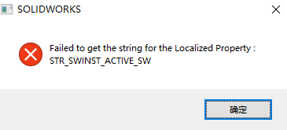

安装常见问题
#官方解决方法（我这里只做了英译汉处理，方便手机等移动端查看）
错误代码
常见的 SolidWorks 相关 Windows Installer（WI）错误代码有哪些？
1304（S-01648）
在新计算机上安装时，是什么原因导致 Windows 安装程序出现“错误 1304”？
方法：
1.可能是磁盘问题，可将安装包内容复制到计算机安装。
2.如果复制过程失败并出现错误，这表示磁盘是坏的。请求更换磁盘。
1406（S-03256）
安装程序错误提示“Cannot write to Windows registry” 1406？
方法：
1、原因是注册表的访问被阻止。使用管理员权限启动安装；
2、如果是管理员权限下，先禁用相关防病毒和防间谍/广告软件后再尝试安装。
1603（S-014608）
PDM 客户端安装失败并回滚，同时显示 Windows® 安装程序错误“MSI 错误代码：1603”？
方法：
1、导致安装失败最可能的原因是目标系统的本地权限不足。
1904（S-01546）
在安装过程，出现信息“安装错误 1904 模块 C:\Windows\system32\threed32.ocx 无法注册”？
方法：
1、需要安装 XML（扩展标记语言）的最新版本才能解决此安装问题。#下载最新 XML 服务版本
2、安装以下文件： “msxml.msi” 在安装此版本的 XML 之前卸载 SOLIDWORKS，然后重新安装 SOLIDWORKS。还需要检查以确保尝试安装时未启用防病毒软件。防病毒软件有时会干扰安装。
1374（S-05098）
当使用 Microsoft Active Directory 安装时，是什么导致“错误 1374”？
方法：
Q：错误 1374 表示 MST 文件中存在不正确的参数。 请仔细检查用于生成 MST 文件的过程和命令。
此问题的最常见原因是用于生成 MST 文件的命令中缺少或多余语法（使用 swcreatemst.exe）。
示例：
1、INSTALLDIR=”C:\Program Files\SolidWorks" 不是用于创建 MST 文件的正确属性。
2、如果使用该结果 MST 文件用于安装 SolidWorks，将会显示错误 1374。
3、正确的语法是 INSTALLDIR=”C:\Program Files\SolidWorks”。
但这只是一个示例而已。 请将整条命令与以下位置中的安装指南中的说明进行比较：http://www.solidworks.com/pages/services/ServicePacks.html
其他
Windows Installer
原因：一般是由于缺少C++导致的。常见于只安装PDM的电脑，由于没安装设计软件，所以可能会缺少PDM必须的C++组件。
解决方法：将SOLIDWORKS安装包中的C++都安装一遍（也可能只安装VCRedist16： Microsoft Visual C++ 2015-2019 Redistributable即可）
1 | X:\SOLIDWORKS安装包\PreReqs\VCRedist16 |
Runtime安装失败

.dll注册失败
sldInnerDispatchProxyu

缺少运行库组件
原因：电脑系统环境缺少组件。提示：Register_DocMgrDLL.A48C1CF2_EBF8_48E8_ACAD_68CA04F776A2
方法：问题参考 S-075133，是电脑缺少组件问题（Microsoft® Visual C++ 2015 Redistributable）。装回组件解决。
（补充一点：该问题存在 2015 和 2017 组件是不能共存。建议是直接安装 2015-2019 的集合包，#访问下载位置）
Net 框架问题
原因：net framework 3.5 安装报错（2022 年后需使用.Net framework 框架 4.8）
方法：
- 打开注册表：HKEY_LOCAL_MACHINE\SOFTWARE\Policies\Microsoft\Windows\WindowsUpdate\AU，其中 UseWUServer 默认值为 1，改成 0；
- 在开始菜单栏搜索“服务”，打开服务列表，重启 Windows Update service；
- 此时可以正常安装.net framework 3.5；
- 将第二步的修改还原注册表 UseWUServer，并重启 Windows Update service。
VBA 问题
原因：因 VBA 版本升级问题，在安装 2021 版后，无法安装 2020 以下版本
方法：
1、卸载新版本的 VBA 7.1。您可以使用附带的脚本来简化这个过程。下载附件“S-078838_uninstall_vba.bat”，以管理员身份运行。
2、找到最近的 SOLIDWORKS 安装(SOLIDWORKS 2021 SP2 或更高版本)，安装 VBA7.1 组件，文件路径 XXX \SOLIDWORKS 2021 SP0X\PreReqs\VBA 
3、安装完成后，再点击卸载，最后重新安装 2021 SP2 以下版本 SOLIDWORKS
安装界面异常或空白
安装界面异常或空白，如下：


方法：在【X:\SOLIDWORKS 2024 SP01\sldimllanglenglish\html】设置下这三个html的权限是完全控制状态。

情况2：

无法连接到IM服务器
问题：下载安装文件时出现错误“无法连接到 IM 服务器以获取时间戳（Unable to connect to IM server to get timestamp）”的原因是什么？
答：确保在防火墙上打开端口 80 的 via HTTP，SolidWorks 安装管理程序在更新过程中使用该端口。
无法找到产品
无法找到产品的安装程序包。一般发生于电脑环境变化有关时，例如注册表修改可以复现此情况，在打开软件时，会提示 xxx 程序正在配置……。

方法：
1、 一般按安装程序提示等待配置即可，
2、 若出现如下”找不到安装程序的情况”，你可能需要手动浏览到安装包文件。

3、 如图举例，你需要找到”Draftsight 安装程序”，点击【浏览】。找到安装程序.exe，选中即可
4、 等待安装配置完成即可
SNL网络许可安装问题
未能获取本地化属性的字符串:
方法：如果您尝试安装 SNL 管理器时，SOLIDWORKS® 在系统上打开，则可能遇到此错误。安装 SNL 管理器前关闭 SOLIDWORKS，以便完成安装